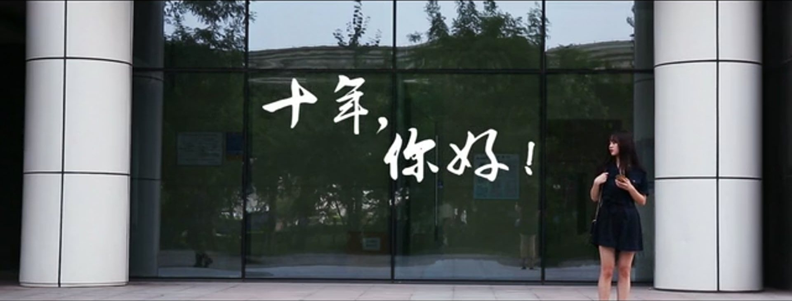
Short film · 2019
Hello, Decade 十年，你好！
Director, Writer & Actor
A girl from a small town settles into big-city life with a boy's help. He goes abroad; ten years later, they meet again by chance.
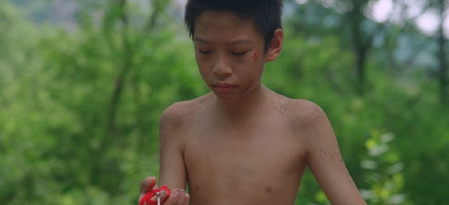
红哨子Writer & Director
Two boys take a red whistle into the forest and find their courage along the way.
Next: The Breeze Blows Through Sahuan Valley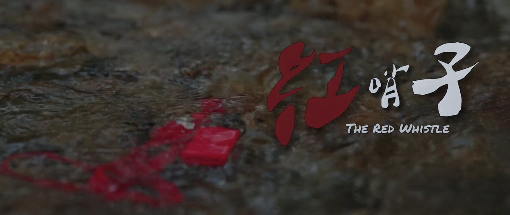
Two boys set off on an adventure into the forest, carrying a red whistle. Out in the wild, untamed woods they discover courage, and something of what it means to grow up.
A film about friendship, bravery, and finding out who you are.
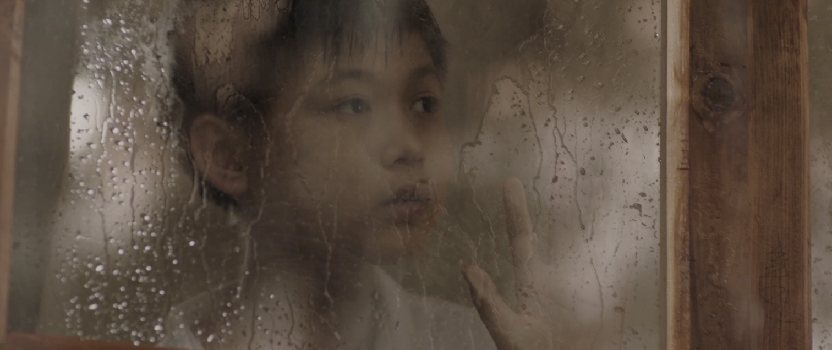
微风吹过撒欢谷Co-writer & Co-director
A narrative short about depression among Chinese teenagers, and why it needs to be talked about.
Next: Little JourneysA narrative film about depression among Chinese adolescents. It sets out to shed light on young people's mental health, and on the need to talk about it openly.
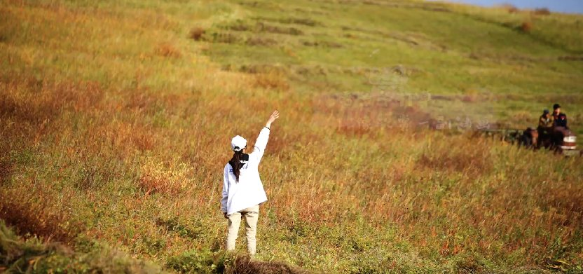
小远方Co-director & Organizer
Inner Mongolia, through the eyes of eighteen-year-olds on their first journey alone.
Next: Because of You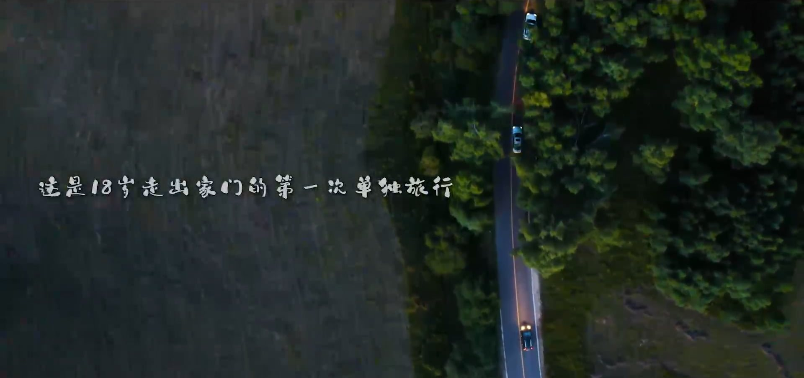
A youth documentary project that travelled across Inner Mongolia, seeing the world through the eyes of eighteen-year-olds. The series shows the vast landscapes, natural beauty and cultural diversity of the region from a young person's point of view.
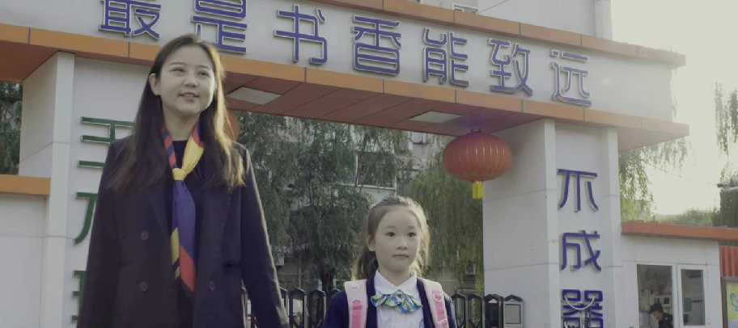
因为遇见你Director
A short film about household registration and access to schooling in Beijing.
Next: Earlier work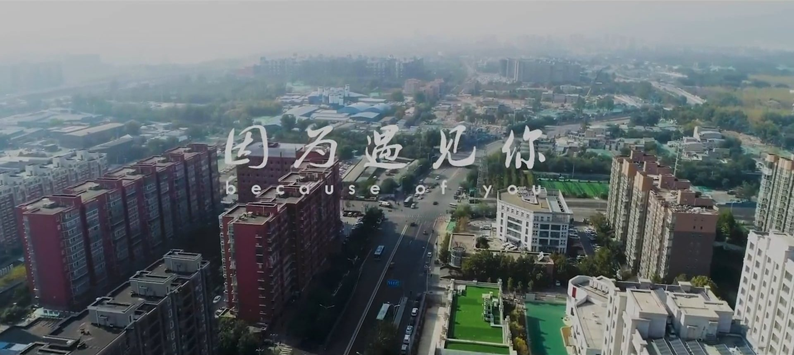
A film about the challenges of household registration and education in Beijing, and what these systems mean for families and for children's futures.
Made as a public-service film for Yuquan Primary School in Beijing, and broadcast on CCTV-10.

Short film · 2019
Director, Writer & Actor
A girl from a small town settles into big-city life with a boy's help. He goes abroad; ten years later, they meet again by chance.
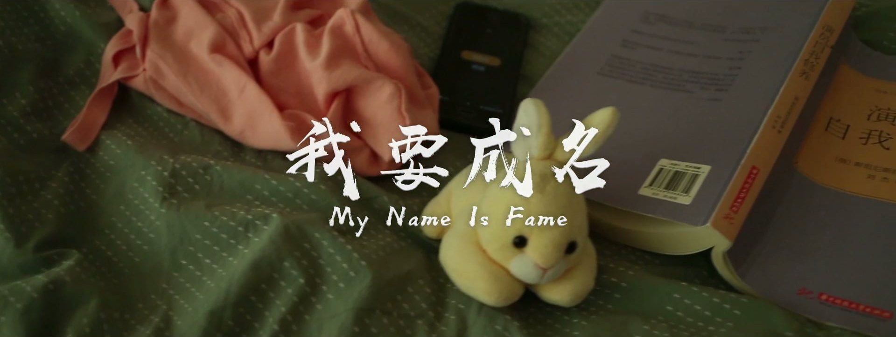
Documentary · 2019
Director
Liao Juan, a struggling actress, is about to give up when a phone call from Stephen Chow offers her a role in King of Comedy 2.
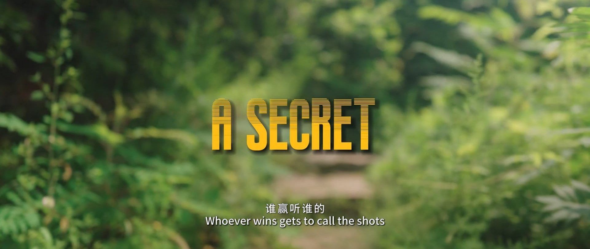
Short
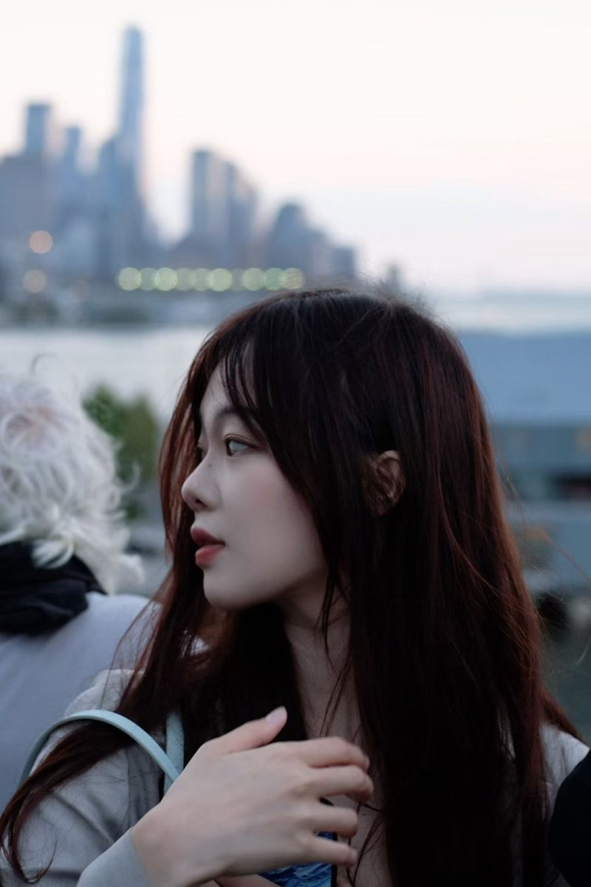
I'm a director and writer based in Los Angeles, currently in the MFA program in Film and Television Production at the USC School of Cinematic Arts.
Before USC, I studied film at the School of Visual Arts in New York. Many of my films follow children and young people, and the families and places around them. Alongside filmmaking, I research how directors make decisions and keep authorship when they work with generative AI.
For screenings, collaborations, or a conversation about films: